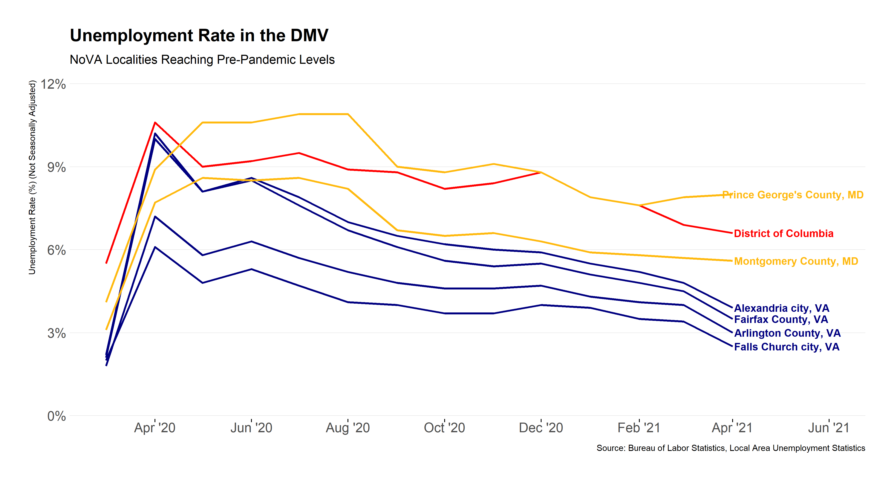
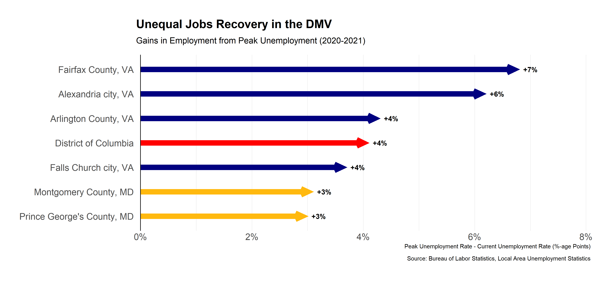

Just two weeks ago, The Wall Street Journal ran an article declaring, “The Economic Recovery Is Here.” The authors cited increased household savings and pent-up demand combined with a tight labor market precipitating greater-than-expected economic growth. But what does this mean in the regional context? Specifically, can we see these trends in the DC-Maryland-Virginia metro area?
This post briefly explores differences in the regional labor market from 2020 to present. The Bureau of Labor Statistics publishes monthly labor force data, including unemployment rates at county levels through the Local Area Unemployment Statistics program. Using this data, I compare relative labor market performance against localities in the Washington-Metro.

Overall, the sharp increase in unemployment at the start of the pandemic has let up — in some areas more significantly than others. For most localities in Virginia, for example, the unemployment rate has dropped, reaching closer to pre-pandemic levels. Other areas, such as Prince George’s County faces continually high levels of unemployment.The chart below summarizes the change in unemployment levels in each locality since their peak in April 2020.

Labor markets in Virginia have started to recover significantly, while those in the rest of the DMV, particularly in Maryland, have not seen the same kind of recovery.These differences may be a product of state and local budget decisions, as Maryland made more cuts to state-funded programs during the pandemic.
Now, as pandemic cases drop and local industries begin to recover, it is time to consider how to bring back employment for the hardest hit areas of the DMV.